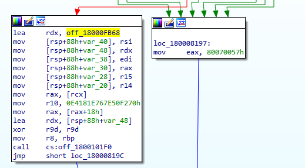

Memory Patching (AMSI Bypass)
Introduction
Hello everyone. I think we all have faced the (Antimalware Scan Interface) or as known as the AMSI. I also belive you had some problem when loading for example a powershell modules like Mimikatz. In small words, the AMSI will be loaded in any application that uses WIN32 API. You can also check the AMSI architecture from the image below.

Overview
From the image we can notice that the function that check the malicious files content is AmsiScanBuffer() and AmsiScanString(). We can use Process Hacker and check the modules that loads in any application. For example in Powershell we can notice that amsi.dll have been loaded in the memory.
While we are looking at the Powershell process we could also check the exported functions of amsi.dll. We will be focusing on AmsiScanBuffer().

AmsiScanBuffer()
We reverse engineered AmsiScanBuffer() function by loading amsi.dll in IDA. At the end of the scanning process we can notice the follwoing instructions:

Playing with WinDBG
From the image above we can notice that the proccess that is suppose to check files are located in the left box. Also if we take a look at the box in the right we can see a value 0x0070057, which is a error code from Microsoft, and also know as E_INVALIDARG. So what could happen if we modified AmsiScanBuffer() fucntion in the memory and make it always return E_INVALIDARG. We can test that in WinDBG:

We can look at the instructions of AmsiScanBuffer() and at the same time we can see the byte-code corresponding to mov eax,80070057h, which is b857000780. So we can try to modify the beginning of the function with the following instructions:
b857000780 mov eax,0x80070057
c3 ret
We are moving 0x80070057 to EAX, making it the return value of AmsiScanBuffer(), at the end the function ends with RET. We can test that by attaching a Powershell process to WinDBG, and try to invoke any malicious file like Mimikatz for example. Just to make sure the AMSI will stop it.
At this moment we will need to reverse the byte-code of mov eax,0x80070057 | ret which will be c380070057b8. We can use it to modify the function in WinDBG using the following command:
eq amsi!AmsiScanBuffer c380070057b8
After that you will be able to load any module you wish to use.

Demo
We at Confidential Team belive in developing our own tools. You can find below a demo of our own script that patch the memory for you. The code will be shared later in 2022.